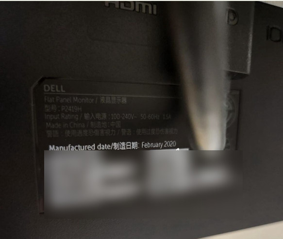
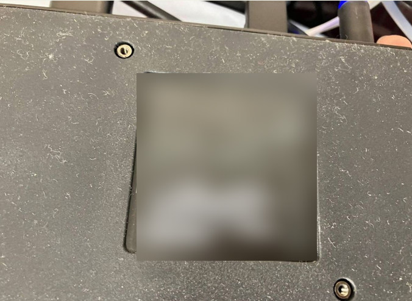
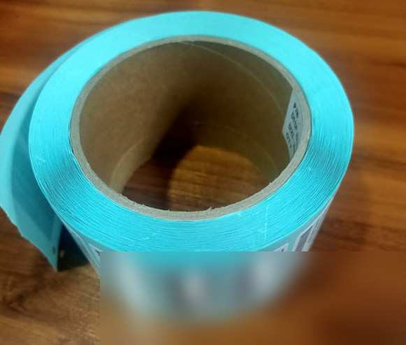
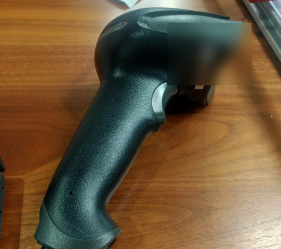
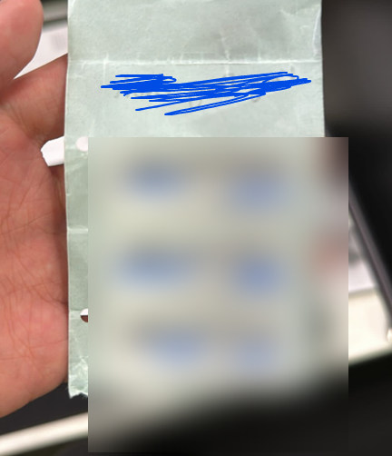
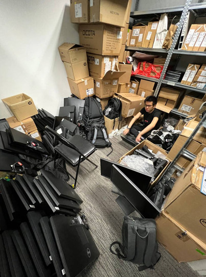
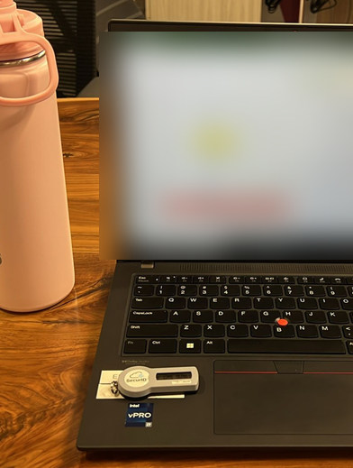

01 / RESPONSIBILITY
Asset tagging & inventory
Tagged devices, checked physical inventory and used barcode scanners to verify equipment information.
WORK EXPERIENCE / INDUSTRIAL ATTACHMENT
My 10-week internship at EVO Outsourcing Solutions gave me hands-on experience with IT asset management, inventory tracking, Excel records and day-to-day project support.
EVO Outsourcing Solutions provides IT services and technology support. During my attachment, I helped with equipment checks, tagging, tracking records and other daily tasks.
I also supported work at government-agency sites and took part in HugoSave roadshow activities. The experience helped me understand how much accuracy and communication matter in IT operations.
A mix of hands-on IT asset work, tracking records, field support and roadshow activities.
Tagged devices, checked physical inventory and used barcode scanners to verify equipment information.
Recorded service tags and updated spreadsheets to keep equipment records organised.
Supported asset checks at government-agency sites and helped with remote tagging.
Assisted with stock checks, equipment handling and store-related activities.
Reported progress on assigned tasks and communicated with colleagues.
Helped introduce the mobile app during roadshows and recorded sign-ups and sales activity.
Photos of the equipment, tasks, workplaces and people from my attachment. Click any photo to view it in full.
03 / ASSET TAGGING & ON-SITE WORK
Labelling devices, recording service tags and supporting asset checks at government agencies.

Recording monitor service-tag details
Recording docking-station service-tag details
Asset tag stickers used to label IT devices
Scanning equipment identifiers with a handheld scanner
Remote asset tags used for IT equipment tracking
Supporting IT stock and store takeover at government agencies
Checking and updating asset records on-site04 / EXCEL & EQUIPMENT TRACKING
Updating stock records, checking inventories and maintaining equipment information.
05 / HUGOSAVE ROADSHOW
Supporting customer outreach, recording roadshow activity and promoting the mobile app.
06 / WORKPLACE & TEAM
A look at the office environment and the people I worked with.
The experience helped me grow professionally and become more confident working with a team.
Sharing progress updates, asking questions and clarifying tasks with colleagues.
Adjusting between on-site asset checks, tracking, stockroom activities and roadshows.
Staying organised and paying attention to the accuracy of equipment records.
Interested in my experience?
Let's get in touch ↗